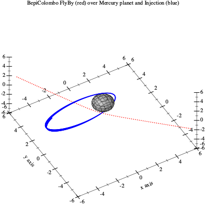
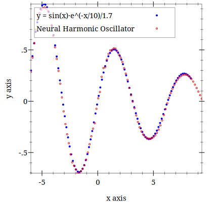
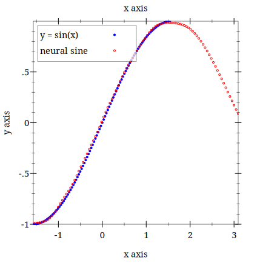

Scheme+ for Racket

| (require Scheme+) | package: Scheme-PLUS-for-Racket |
| #reader SRFI-105 | package: SRFI-105-for-Racket |
Scheme+ is Scheme with, in addition, infix expressions (with the precedence of the operators), postfix expressions, the square brackets [ ] of the other languages to access arrays, strings and hash tables, operators of assignment and definition, and an optional type annotation with type inference, which specializes the operators at read time. They can be mixed with the usual Scheme syntax:
(define (distance x0 y0 x1 y1) (√ {(x1 - x0) ² + (y1 - y0) ²})) ; prefix and infix mixed , superscript exponents (distance 1 2 4 6) 5 {v := (make-vector 3 0)} {v[2] := 3 * (- 9 4) + 2} ; square brackets , assignment , a prefix expression inside an infix one v '#(0 0 17) {5 !} ; postfix 120 (define (σ z̃) ; the sigmoid of a neural network (type ℝ z̃) ; type annotation (in a region ANNOTATION-ON) {1.0 / (1.0 + (exp (- z̃)))}) ; rewritten as (fl/ 1.0 (fl+ 1.0 (exp (fl- z̃)))) : the operators of the floats (σ 2.0) 0.8807970779778823
The type annotation and inference are described in Type annotation and inference.
Scheme+ is an extension of the syntax of the Scheme language.
Scheme+ adds to Scheme a way to use also infix and even postfix notation with a compatibility near 100% and not as a sub-system of Lisp syntax as it is often done but with a complete integration in the Scheme reader/parser system and also for Racket at REPL (Read Eval Print Loop).
Scheme+ is to Scheme what a concept-car is to automobile.Scheme+ is a concept-language.It is ideally what should be a modern Scheme. As Scheme+ syntax is compatible with Scheme syntax you can mix the two syntaxes in the same program.
Scheme+ makes it easy the assignment of Scheme objects in infix (works also in prefix) notation with a few new operators := (or: <- , ←),⥆ (or <+ , :+) for definitions.
Scheme+ makes it easy the access and assignment for arrays,strings,hash tables,etc by allowing the classic square brackets [ ] of other languages.
What Scheme+ is not: Scheme+ is not a DSL (Domain Specific Language) a contrario Scheme+ tends to be the more universal possible and to be applied in a lot of domains.
Scheme+ is available for different Scheme implementation: DrRacket,Guile,Kawa... the Racket implementation is for now (2025) the most advanced.
Scheme+ is used with a Curly Infix reader, provided by the following packages:
| (require Scheme+) | package: Scheme-PLUS-for-Racket |
| #reader SRFI-105 | package: SRFI-105-for-Racket |
Optional but recommended:
| #reader curly-infix | package: curly-infix |
Not required:
| #reader SRFI-110 | package: SRFI-110-for-Racket |
Table of Contents
3 Scheme+ and Curly Infix SRFI-105 REPL (Read Eval Print Loop) |
4 A simple Hello World application in Scheme+ and Curly Infix |
7.4 Annotating variables, elements and procedures : the type form |
1 Prefix, infix and postfix expressions in the same world
You can mix infix,prefix and postfix sub-expressions in the same expression:
> {3 * (- 9 4) + 2} 17
In Scheme+, in an expression surrounded by {} curly brackets,the sub-expressions using () round brackets can contains prefix,infix or postfix expressions.The parser will automatically detect the infix,prefix or postfix and parse it accordingly.
> {(3 + 1) * (2 * (+ 2 1) - (sin 0.3)) + ((* 2 5) - 5)} 27.817919173354642
(+ (* (+ 3 1) (- (* 2 (+ 2 1)) (sin 0.3))) (- (* 2 5) 5))
Other examples:
(define (fib n) (if {n < 2} n {(fib (n - 1)) + (fib (n - 2))} )) (fib 7) 13
> {(- 7 (3 * (+ 2 4) - 1)) + 3} -7
The detection is done when the code is read. Besides the procedures of racket/base, the parser knows the procedures and macros of your program: those defined in the file, those declared with a type of procedure (see type) and the overloaded ones. Between {} the definition or the declaration must be written before its use. A () sub-expression inside {} that has the shape of an infix expression, a procedure unknown by the parser (for example imported from a module) followed by an operator and a single argument, is read as infix:
(define v (vector 1 2 3)) {w := (vector-map - v)} ; read as (:= w (- vector-map v)) : vector-map is taken as an operand (type procedure? vector-map) {w := (vector-map - v)} ; read as (:= w (vector-map - v)) : a call of vector-map
You can also write such a call outside the curly brackets: (vector-map - v) alone is a prefix call. (list - 1) inside {} stays prefix because list is a procedure of Racket, and (vector-map - v w) too because it is not an infix expression. See also Scheme forms : technical notes.
Postfix:
> {1 2 3 4 +} 10
A quoted or quasiquoted list is data: it is not parsed, even inside {}. In a quote or a quasiquote only the {} curly brackets are infix, as in SRFI 105: a quoted {} expression is converted in prefix at its top level only, its () sub-lists stay as written whatever the number of operators ('{(x + y) * z + 1} is '(+ (* (x + y) z) 1)), and an unquoted part written in infix must use curly brackets too, ,{…}. For the symbolic computation, the pragma CARE-OF-QUOTES-OFF opens a region where the quoted lists are infix expressions at all levels, see Pragmas.
(define y 2) {d := '(x + y)} ; a list of 3 symbols d '(x + y) {q := `(x + y ,{y * 3})} q '(x + y 6) {e := '{x + y}} e '(+ x y) {f := '{{B1 · B0} ⊕ {C1 · {B1 ⊕ B0}}}} f '(⊕ (· B1 B0) (· C1 (⊕ B1 B0)))
The modified SRFI 105 Curly Infix reader is an external parser necessary for the curly brackets { } syntax which is not in the base of scheme language and for the indexing [ ] square brackets.
Syntax transformers are sometimes used at a "compile" stage before the code run.
Parsing at runtime is rarely done but can be necessary when the parsed expression or some of her subexpressions remain ambiguous at prior parsing stages about being infix or prefix expressions (for performance and optimisation and because of their rarity postfix expression are never parsed at runtime).
Here the parsing process is activated by the encountering of curly parenthesis { } in the expressions (there exist also other ways to force the parsing):
(define (line-length x0 y0 x1 y1) (√ {(x1 - x0) ² + (y1 - y0) ²})) {(ksy / (√ 2)) * (- x + y)} (define (norm x y) {x ² + y ²})
2 Scheme+ Installation and Dependencies
Scheme+ can be installed via the Racket Package system or downloaded from Github.See the links at the top of this page. Scheme+ is designed to be used with the package curly-infix or with SRFI-105 for Racket which is a curly infix reader also available in the same way described above. As an alternative to SRFI 105 you can also use SRFI 110, which reads also the sweet-expressions: Scheme+ can then be written with indentation instead of parenthesis, see the documentation of SRFI 110.
It is better to disable Background Expansion in the Preferences menu of Racket because it could warn for false error if not disabled.But this should not block the compilation of code.
3 Scheme+ and Curly Infix SRFI-105 REPL (Read Eval Print Loop)
As Scheme+ is designed to be used with the Curly infix syntax of SRFI-105 or SRFI-110, the latter one requires an external reader/parser and a specific REPL (Read Eval Print Loop). The REPL must be loaded in Racket GUI or invoked in the shell if you work in command line mode. The REPL file can be found in the source code of Scheme+ or SRFI-105 in the src/ sub-directory, his name is REPL-Scheme-PLUS.rkt.
#! /usr/bin/env -S racket --load REPL-Scheme-PLUS.rkt --repl ;; the line above is not mandatory,only for launching a script in command line ;; in CLI you must (require Scheme+) manually ;; but if you want to have syntax color in CLI start racket yourself and do: ;; (load "REPL-Scheme-PLUS.rkt") #lang reader SRFI-105 ; SRFI-105 Curly-infix-expressions (module repl racket (provide (all-defined-out)) (require Scheme+) ;; put your code here or simply use the REPL )
If you installed Scheme+ with the Package Manager of the DrRacket the place of the above file REPL-Scheme-PLUS.rkt depends of your system and scope of installation of Scheme+.
For example under Linux and for a user installation of Scheme+, REPL-Scheme-PLUS.rkt should be relative to your home directory in the .racket subdirectory followed by path depending of the version of Racket and finally in pkgs/Scheme-PLUS-for-Racket/src.
Example under Linux with a user (mattei) installation of Scheme+ and the 8.17 version of Racket: /home/mattei/.racket/8.17/pkgs/Scheme-PLUS-for-Racket/src/REPL-Scheme-PLUS.rkt
You could simply open the above file in DrRacket to work with Scheme+.
> {x := 2.0} > (:print-type x) flonum? > (:print-type {x * 3.0}) flonum? > (define (g a) {a * 2.0}) > (type [(flonum?) procedure? (flonum?)] g) > (:print-type g) (flonum? -> flonum?) > (:print-type (g 1.5)) flonum? > (:print-type (list 1 2)) (fixnum?) > (define (add-n-lists . vn-lst) (apply map + vn-lst)) > (overload-operator + (list?) add-n-lists (list?)) > (:print-type add-n-lists) (list? ... -> list?) > (:print-type +) (fixnum? fixnum? -> fixnum?) (exact-integer? fixnum? -> exact-integer?) ... (list? ... -> list?) ...
The type displayed is what the annotation inferred, the type it uses to specialize the operators, not a check: the annotation trusts the declarations. When the annotation does not know the type, :print-type displays unknown type (the annotation does not know it); without ANNOTATION-ON, it displays that the annotation is not active. In a module, :print-type is a syntax error.
4 A simple Hello World application in Scheme+ and Curly Infix
#reader SRFI-105 ; SRFI-105 Curly-infix-expressions (require Scheme+) (display "Hello world") (newline)
Another example that really use Curly infix syntax with Scheme+ :
#reader curly-infix ; alias of SRFI-105 (require Scheme+) (overload-operator + string-append (string?)) {"Hello" + " " + "world !"}
"Hello world !"
You can also use SRFI-110 which implements too the curly infix parser:
#reader SRFI-110 ; implements too the curly infix parser (display "Hello world") (newline)
A module example:
#lang reader SRFI-105 ; SRFI-105 Curly-infix-expressions (module hello-world racket (provide (all-defined-out)) (require Scheme+) (display "Hello world") (newline) )
#reader curly-infix (provide (all-defined-out)) (require Scheme+) (display "Hello world") (newline)
5 Scheme+ Syntax and Conventions
5.1 Curly Infix notation with { }
In general Scheme+ use the same convention for infix expression than SRFI-105 Curly Infix that is an infix expression is between curly parenthesis { }. But infix or postfix sub-expressions are allowed to be between normal parenthesis ( ) like it is in mathematic notation. Infix, postfix or prefix is then autodetected.In case of ambiguities { } force infix mode and possibly postfix mode,while ( ) remains prefix mode. Inside curly infix expression surrounded by { } parenthesis associativity and operator precedence are applied.
#lang reader SRFI-105 (require Scheme+) {3 * 5 + 2} (+ (* 3 5) 2) ; generated code displayed by REPL/parser 17 ; result
> {3 * 7 + 2 - 12 / 3 + -2} 17
In the examples the display of the REPL/parser in prefix will generally be removed from examples for clarity, also the prompt > and the displayed #<eof> (end of file), if any,printed by some ancient versions of the SRFI-105 parser.
#lang reader curly-infix (require Scheme+) {3 · 5 + 2 ³} 23
Note that in the above example and in Scheme+ the operator · is *, also note that superscript chars are exposants.
In the following sections i will omit to rewrite the directives about lang or reader and the requirement in each example to keep the code and the web page compact.
An example of inner round brackets inside curly brackets in a full infix expression:
(define x {3 * (2 + 4) - 1}) (display x) 17
Example of a mixed infix and prefix expression autodetected:
> {3 * (+ 2 4) - 1} 17
Other examples:
(define (fib n) (if {n < 2} n {(fib (n - 1)) + (fib (n - 2))} )) (fib 7) 13
Curly infix can also be used in some macro definitions:
(define-syntax += (syntax-rules () ({var1 _ var2} {var1 := var1 + var2}))) (define-syntax += (syntax-rules () ((_ var1 var2) (:= var1 (+ var1 var2))))) ; parsed result {x := 3} {x += 7} x 10
(define-syntax plus (syntax-rules () ({var1 _ ...} {var1 + ...}))) (define-syntax plus (syntax-rules () ((_ var1 ...) (+ var1 ...)))) ; parsed result {2 plus 3} (plus 2 3) ; parsed result 5 {2 plus 3 plus 4 plus 5 plus 6} (plus 2 3 4 5 6) ; parsed result 20
{3 ² + 2 · 3 · 5 + 5 ²} 64
5.2 Square Bracket notation with [ ]
The square bracket notation can be used with any object that can be indexed or retrieved by a key: it works with vectors,strings of characters, arrays, hash tables,etc.
syntax
{T[k]}
{#(1 2 3 4)[2]} ($bracket-apply$ #(1 2 3 4) 2) ; code generated by the parser 3
I will not always display generated code by parser and end of file symbol as only the result is important for the programmer.
{#(1 2 3 4)[1]} 2
(define T (vector 1 2 3 4 5)) {T[3]} 4
{"hello"[4]} #\o
{"hello"[-4]} #\e
A slice notation with : is available.It allows the same features as the slicing of Python language and sometimes more.
{"elephant"[2 : 5]} "eph"
{#(1 2 3 4 5)[2 :]} '#(3 4 5)
{#(1 2 3 4 5 6 7)[2 * 5 - 8 : 3 * 5 - 10]} '#(3 4 5)
(define a 0) (define b 5) {"hello world"[a : b]} "hello"
syntax
{T[begin : end : step]}
{#(1 2 3 4 5 6 7 8 9)[3 : 8 : 2]} '#(4 6 8)
{#(1 2 3 4 5 6 7 8 9)[-1 : 5 : -1]} '#(9 8 7)
{#(1 2 3 4 5 6 7 8)[: : 3]} '#(1 4 7)
{#(1 2 3 4 5 6 7 8)[: : -2]} '#(8 6 4 2)
{"abcdefghijklmno"[3 : : 2]} "dfhjln"
The square bracket notation [ ] works also with multiple dimensions vectors:
{M := #(#(1 2 3) #(4 5 6))} {M[1][2]} 6
You can use also this [ ] notation variant, like matrix notation, and compatible with arrays in case of you use them:
{M := #(#(1 2 3) #(4 5 6))} {M[1 2]} 6
Examples:
{ᐁ[i][k] := y[k] - z[i][k]}
5.3 File naming conventions
Generally a Scheme+ program file is named with a + symbol before the normal scheme extension, examples: SssDyna+.scm or SssDyna+.rkt.The Makefile (see section more below) i provide will automatically parse files named with this convention.
6 Scheme+ Reference
This sections describe the macros,operators and procedures that are the core of Scheme+.
From subsections 1 to 6 what are described are almost every time macros.
6.1 Declarations
(declare x) (when (identifier-binding #'x) "variable x exists") "variable x exists"
You can not both declare and define a variable in a program (module):
#reader curly-infix (provide (all-defined-out)) (require Scheme+) (declare x) (define x 3)
module: identifier already defined in: x
Note that declare is rarely used,instead assignment macros like := are used, but it could be usefull in case a variable used in a block must be used outside the scope of the block too like in this example:
(declare x) {t := 3} (when {t > 1} {x := 7}) {x := x + 1} x 8 ; result
By default the declared variables are set to NIL, that is ’()
(declare x) x '()
6.2 Definitions
syntax
{name <+ value}
{x <+ 7} x 7
Note: this is almost never used in Racket,because Scheme+ for Racket has a special feature of autodetecting if a variable needs to be defined before assignment and in this case it will define it for the programmer in the current block.
There is some alias of <+ :
syntax
{y :+ 3} ; definition {y := y + 1} ; assignment y 4
Note: a lot of operators of Scheme+ that works left to right exist in the opposite sense, i will not document them as it is obvious,example:
syntax
{value ⥅ name}
(or +> , +:)
Also a lot of Scheme+ operator have infix n-arity capability , i will not completely document them at the beginning of this document but in other parts later.
{name ⥆ name2 ⥆ 7} (list name name2) '(7 7)
6.3 Assignments
syntax
{name := value}
{x := 7} x 7
If the variable was not existing in the current environment it will be automatically declared,this is a special feature of the Scheme+ version for Racket that can rarely be reproduced in other scheme implementations.
There is some alias of := :
syntax
{name <- value}
{index <- index + 1}
syntax
{z ← 1.13+1.765i}
To assign a variable and return the value inside an expression, as the := of Python, see The walrus operator.
syntax
{(name1 name2 ...) := values}
{(x y z) := (values 1 2 3)} (list x y z) '(1 2 3)
The values of the right hand side are computed before the assignment, so they can use the old values of the variables, as in this swap:
{(a b) := (values 1 2)} {(a b) := (values b a)} (list a b) '(2 1)
The assignment operator is a macro that works in taking in account the square bracket [ ] notation in the RHS (right hand side) of any expression:
(define T (make-vector 5)) {T[3] := 7} {T[3]} 7
Remember :=,for Pascal language fans, is exactly the same as <-.
(require srfi/25) {a :+ (make-array (shape 0 5 0 3) 0)} {a[1 2] := 7} {a[1 2]} 7
Other example:
{M_i_o[j (i + 1)] := M_i_o[j (i + 1)] + η · z_input[i] · მzⳆმz̃(z_output[j] z̃_output[j]) · ᐁ_i_o[j]}
მzⳆმz̃(z_output[j] z̃_output[j])
(მzⳆმz̃ z_output[j] z̃_output[j])
Assignment and slicing works as in Python language or even better,allowing more possibilities.
Examples:
{v ⥆ (vector 1 2 3 4 5 6 7 8 9)} '#(1 2 3 4 5 6 7 8 9) {v[: : 2] := (vector -1 -2 -3 -4 -5)} v '#(-1 2 -2 4 -3 6 -4 8 -5)
Note: remember ⥆ (or <+ , :+) is for new definitions but in Racket i could have directly use :=.
{v ⥆ (vector 1 2 3 4 5 6 7 8 9)} {v[: : -2] := (vector -1 -2 -3 -4 -5 -6 -7 -8 -9 -10 -11 -12 -13)[: : 2]} v '#(-9 2 -7 4 -5 6 -3 8 -1)
Remember := is exactly the same as <-.
{v ⥆ (vector 1 2 3 4 5 6 7 8 9)} {v[: : -2] := "abcdefghijklmnop"[: : 2]} v '#(#\i 2 #\g 4 #\e 6 #\c 8 #\a)
{v ⥆ (vector 1 2 3 4)} {v[1 : 3] := "abcdef"[2 : 4]} v '#(1 #\c #\d 4)
{v ⥆ (vector 1 2 3 4 5 6 7 8)} {v[3 : : 2] := (vector -1 -2 -3)} v '#(1 2 3 -1 5 -2 7 -3)
{v ⥆ (vector 1 2 3 4 5 6 7 8)} {v[5 : : -2] := (vector -1 -2 -3)} v '#(1 -3 3 -2 5 -1 7 8)
{v :+ (vector 1 2 3 4 5 6 7 8 9)} {v[7 : 2 : -2] := (vector -1 -2 -3)} v '#(1 2 3 -3 5 -2 7 -1 9)
6.4 The walrus operator
(declare x y) {y := {x :=> 5} + 1} (list x y) '(5 6) (define (long-list? l) (declare n) (if {(n :=> (length l)) > 10} n #f))
The variable must exist before: defined, declared with declare, or a parameter of the procedure. A new name is refused at expansion time (:=>: the variable must be declared before): := would define it, but inside the expression the definition would be local and lost, whereas Python creates the variable in the enclosing scope. As :=, :=> accepts the square brackets and the chained assignments:
{T[i] :=> 7} 7 {a :=> b :=> 3} 3
With the type annotation, {name :=> value} has the type of value: {y := {x :=> a * 2.0} * 3.0} with a flonum a is read as (:= y (fl* (:=> x (fl* a 2.0)) 3.0)).
6.5 Procedure definitions
Example:
(def (foo L) (when (null? L) (return "empty list")) (cons "hello list :" L)) (foo '()) "empty list"
Note: return can only be used inside specific macros :
(return 7)
Another example:
;; this procedure check that we have a canonical infix expression ;; i call 'canonical' an expression such as 3 * 5 + 2 ;; in contrary an equivalent expression such as this one: - - 3 * 5 + 2 is not 'canonical',etc ;; conditions to be 'canonical' will be to have : ;; * at least 3 terms in expression ;; * odd number of terms ;; * operators between terms (def (infix-canonical? L) (define lgt (length L)) (when (or (< lgt 3) (not (odd? lgt))) (return #f)) (def (check-operators? L2) (when (null? L2) (return #t)) (if (not (operator-syntax? (car L2))) #f (check-operators? (cddr L2)))) (check-operators? (cdr L))) (infix-canonical? '(2 * 3 4)) #f (infix-canonical? '(2 * 3 + 4)) #t
(define first-negative (lambda+ (L) (for-each (λ (x) (when {x < 0} (return x))) L) #f)) (first-negative '(3 -2 5 -7)) -2
def and lambda+ take a continuation (call/cc) only when return or return-rec is written in their body: otherwise they are exactly define and lambda, at the same speed. With return, each call costs about 8 to 17 times the call of a procedure, which matters only for a procedure called very often.
syntax
(def name)
6.6 Control flow : Conditionals and Loops
(if #t then "True") "True"
(if #f then "You" "should" "not" "be" "there." else "I" "am" "here") "here"
The then and else blocks can also be written as sub-lists, (then then-body ...) and (else else-body ...), and the two writings can be mixed:
(if #f (then "You" "should" "not" "be" "there.") (else "I" "am" "here")) "here"
This is what the indentation gives with the sweet-expressions of SRFI 110, where the blocks can then be indented under their keyword:
if {x < 0} then 'negative else 'positive
Example from real code:
(if (singleton-set? sos) then ;; singleton (reverse acc) else ;; at least 2 elements in set of sets {mt-set1 := (car sos)} ;; minterm set 1 {mt-set2 := (cadr sos)} ;; minterm set 2 {mt-set2-to-mt-setn := (cdr sos)} ;; minterm sets 2 to n {weight-mt-set1 := (floor-bin-minterm-weight (car mt-set1))} ;; in a set all minterms have same weight {weight-mt-set2 := (floor-bin-minterm-weight (car mt-set2))} {delta-weight := {weight-mt-set2 - weight-mt-set1}} (if {delta-weight = 1} then ;; if minterms set are neighbours ;; unify neighbours minterms sets {unified-mt-set1-and-mt-set2 := (funct-unify-minterms-set-1-unit-threads mt-set1 mt-set2)} (if (null? unified-mt-set1-and-mt-set2) (funct-unify-minterms-set-of-sets-rec-tail mt-set2-to-mt-setn acc) ;; the result will be the continuation with sets from 2 to n (funct-unify-minterms-set-of-sets-rec-tail mt-set2-to-mt-setn (insert unified-mt-set1-and-mt-set2 acc))) else (funct-unify-minterms-set-of-sets-rec-tail mt-set2-to-mt-setn acc))) ;; continue with sets from 2 to n
syntax
{statement if test [else statement2]}
(statement if test [else statement2])
Examples:
{"Hello world" if #t} "Hello world"
(declare interpolation-code) {{interpolation-code := "cut_1D.py"} if ipic3D else {interpolation-code := "cut_1D_menura.py"}}
{"test positif" if ((#f or #f) and #t) else "test negatif"} (if (and (or #f #f) #t) "test positif" "test negatif") ; result of parsing "test negatif"
(define (foo) {"test positif" if ((#f or #f) and #t) else "test negatif"}) (foo) "test negatif"
(define x 1) (condx ((= x 7) 'never) (exec (define y 3) (set! x 7)) ((= y 1) 'definitely_not) (exec (set! y 10) (define z 2)) ((= x 7) (+ x y z)) (else 'you_should_not_be_here)) 19
Note that scheme cond and scheme+ condx are a style of programming, you can use other style with same result, i think of using def and return with when and if that can replace them.
Example from real code of the subset sum problem from the file SssRec+.rkt in examples directory :
{c :+ (first L)} {R :+ (rest L)} (condx [ {c = t} (return #t (cons c s)) ] ;; c is the solution [ {c > t} (ssigma-solution-exact R t s) ] ;; c is to big to be a solution ;; c < t at this point ;; c is part of the solution [ exec {(c-sol sol) := (ssigma-solution-exact R (t - c) s)} ] [ c-sol (return c-sol (append (cons c s) ; c is in the solution for t, we insert it in the previous partial solution sol)) ] ; we append with sol to get also the solutions of t - c,resulting in solutions of c + (t - c) = t ;; or c is not part of solution ;; or the two ! perheaps there exists 2 solutions using or not using c ! (in this case we got only the first found!) [ else (ssigma-solution-exact R t s) ] )
Note about the example above which mix condx and return because it is part of a procedure not displayed here, i encourage the reader to see the full source code SssRec+.rkt to understand it better.
{i := 5} (repeat (display i) (newline) {i := i - 1} until {i < 0}) 5 4 3 2 1 0
Note: above i used := which is exactly the same as <- or ←.
With while at the end, it is the do ... while of C/C++, Java or Javascript: loop over body ... while test is true. The test is computed after body ..., so the body is executed at least once (repeat ... until stops when its test is true). The body ... can contain definitions.
{i := 0} (do (display i) (newline) {i := i + 1} while {i < 3}) 0 1 2
Without while, it is the do of Scheme (R7RS): the variables with their initial values and their steps, the test of the end and the expressions of the result, then the body, which can contain definitions (as the body of a procedure, at no cost). In a region ANNOTATION-ON, the types of the variables written with type in the body are known by the steps and the test too (see Annotating variables, elements and procedures : the type form):
(define (sum-vector v n) (type #(flonum?) v) (type ℕ n) (do ((k 0 {k + 1}) (sum 0.0 {sum + v[k]})) ({k = n} sum) (type ℕ k) (type flonum? sum))) ;; code generated by the annotation parser: ;; (do ((k 0 (fx+ k 1)) ;; (sum 0.0 (fl+ sum ($bracket-apply-vector-natural$ v k)))) ;; ((fx= k n) sum))
(sum-vector #(1.0 2.0 3.5) 3) gives 6.5.
(for ({i := 0} {i < 3} {i := i + 1}) (display i) (newline)) 0 1 2
(for ({i := 0} {i < n - 2} {i := i + 1}) ;; create an array with 1 in front for the bias coefficient {z_1 := #(1) + z[i]} ; + operator has been overloaded to append scheme vectors {z̃[i + 1] := M[i] · z_1} ; z̃ = matrix * vector , return a vector {z[i + 1] := vector-map(activation_function_hidden_layer z̃[i + 1])})
Example from matrix multiplication, compute element i,j of result:
(for ({k := 0} {k < p1} {k := k + 1}) {sum := sum + M1[i][k] * M2[k][j]})
Note about Scheme+ for Racket: the for described above replace the original for of Racket, you should back up it as below before using that. Also Scheme+ define in-range and reversed as in Python language but they already exist in Racket Scheme.
(require (only-in racket/base [for for-racket])) ;; backup original Racket 'for' (for-racket ([i (reverse (range 1 i_output_layer))]) {nc := vector-length(z[i])} {ns := vector-length(z[i + 1])} (for-racket ([j (range nc)]) {ᐁ[i][j] := (for/sum ([k (range ns)]) (მzⳆმz̃(z[i + 1][k] z̃[i + 1][k]) · M[i][k (j + 1)] · ᐁ[i + 1][k]))}) ; modification des poids de la matrice de transition de la couche i-1 à i {modification_des_poids(M[i - 1] ηₛ z[i - 1] z[i] z̃[i] ᐁ[i] მzⳆმz̃)})
6.7 Blocks
(if (compare-minterm-and-implicant {iepi[lin 0]} {iepi[0 col]}) ;; then ($> (incf cpt-mt) (when (= 1 cpt-mt) {lin-pos-epi ← lin}) ;; position of essential prime implicant {iepi[lin col] ← 1}) ;; else {iepi[lin col] ← 3})
(define-syntax $+> (syntax-rules () ((_ ev) (let () ev)) ;; there can be a <+ in it expanding with a 'define' ((_ ev ...) (let () ev ...))))
;; PHASE 0 : eliminate equivalence ;; a <=> b ----> (a => b) and (b => a) (define (elim-equivalence expr) (cond ((symbol? expr) expr) ((boolean? expr) expr) ((isNOT? expr) `(not ,(elim-equivalence (arg expr)))) ((isIMPLIC? expr) `(=> ,(elim-equivalence (arg1 expr)) ,(elim-equivalence (arg2 expr)))) ((isEQUIV? expr) ($+> ;; a <=> b ----> (a => b) and (b => a) {a ⥆ (arg1 expr)} ; definitions, as : (define a (arg1 expr)) {b := (arg2 expr)} ; note: in Racket i could use also := which auto-define the variable if necessary : {ae := (elim-equivalence a)} {be := (elim-equivalence b)} `(and (=> ,ae ,be) (=> ,be ,ae)))) (else `(,(operator expr) ,(elim-equivalence (arg1 expr)) ,(elim-equivalence (arg2 expr))))))
6.8 Operators and Procedures
Note: exponentiation can also be written with superscript numbers and expressions,see after in this document.
(√ 2) 1.4142135623730951
> {~ 5} -6
In an infix expression ~ is a prefix unary operator, with the precedence of Python, as the unary minus: it binds more tightly than *, +, &, the shifts and the comparisons, and less tightly than the exponentiation. A ~ in the position of an operand (at the beginning, or after an operator) applies to the term that follows it, with the chain of exponentiation after this term.
{a & ~ b} ; (& a (~ b)) {~ a & b} ; (& (~ a) b) {2 * ~ a} ; (* 2 (~ a)) {~ ~ a} ; (~ (~ a)) {~ a ** 2} ; (~ (** a 2)) {~ a ²} ; (~ (** a 2)) {2 ** ~ a} ; (** 2 (~ a))
In a call written in prefix, or when nothing follows it, ~ is simply the procedure ~, used as a value: {f := ~} assigns it to f, and in (map ~ l) it is passed as an argument to map. The prefix unary operators of Scheme+ are those of Python: -, +, ~ and not.
As being procedurals && and ∣∣ are not short-circuited. The and and or of Scheme remain usable as usual, in prefix and in infix ({a and b} is (and a b)), and they are short-circuited.
> {not #f} #t
In an infix expression not is a prefix unary operator, with the precedence of Python: it binds less tightly than the comparisons and the arithmetic operators, and more tightly than and and or. A not in the position of an operand (at the beginning, or after an operator) applies to the terms that follow it, until the next and, or, assignment or definition. It works with the two precedence engines of Scheme+: a Pratt parser (top down operator precedence), used by default, and the original engine of Scheme+, which reduces the expression in successive passes, one for each group of operators of the same precedence, from the highest precedence to the lowest.
{not a} ; (not a) {a and not b} ; (and a (not b)) {not a and b} ; (and (not a) b) {not x < y} ; (not (< x y)) {a or not b and c} ; (or a (and (not b) c)) {not not a} ; (not (not a)) {x := not a and b} ; (:= x (and (not a) b))
A not in the position of an operator, between two operands, negates the comparison that follows it, as not in in Python but for any procedure or operator: L not X R is (not (X L R)), the operands going until the next and, or, assignment or definition. This is the negated relation of the mathematics (∉, ≮), and of NOT IN or NOT LIKE in SQL and !in in Kotlin; Python has only not in.
{5 member '(1 2 3)} ; (member 5 '(1 2 3)) {5 not member '(1 2 3)} ; (not (member 5 '(1 2 3))) {x + 1 not member l and y} ; (and (not (member (+ x 1) l)) y) {a not < b} ; (not (< a b))
In a call written in prefix, or when nothing follows it, not is simply the procedure not, used as a value, and the reading does not transform it: {f := not} assigns the procedure not to f, and in (map not l) it is passed as an argument to map.
{3 ≤ 4 < 5} #t
;; we plot only in the window (when {x0 ≥ 0 and x0 ≤ xws and x1 ≥ 0 and x1 ≤ xws and y0 ≥ 0 and y0 ≤ ywsp and y1 ≥ 0 and y1 ≤ ywsp} (send dc draw-line x0 y0 x1 y1))
Note: some Qi operators not documented here (see Qi documentation for them) are recognized, for example ~> should immediately work in infix:
;; displayTrajectory3D : parse the Bepi Colombo spacecraft trajectory file text and display it in 3D #lang reader curly-infix ;; (displayTrajectory3D "/opt/homebrew/var/www/drive/BepiColombo-Mio_MSO-orbit_1min_short.txt" "/opt/homebrew/var/www/drive/BepiColombo-Mio_MSO-FlyBy_1min_short.txt") (module displayTrajectory3D racket (require Scheme+) (require xml (except-in 2htdp/batch-io xexpr?)) ; for: read-lines (require plot) (require racket/pretty) ; pretty print (require qi qi/list) ; Qi flow language (provide displayTrajectory3D) (define (displayTrajectory3D src src1) ;; check we have a .txt file {ext := src[-4 :]} ; try to get the .txt extension (when (not (equal? ext ".txt")) (error "Not a text file.")) ;; read all lines {input-lines := (read-lines src)} {vl := (list->vector input-lines)} {input-lines1 := (read-lines src1)} {vl1 := (list->vector input-lines1)} ;; find the basename {basename := src[: -4]} ; skip the 4 char of extension ;; find the spatial_unit if exist {spatial_unit := (regexp-match #rx"km" vl[4])} (when (not spatial_unit) {spatial_unit := (regexp-match #rx"Rm" vl[4])}) (when (not spatial_unit) (error "No spatial unit (km or Rm) found.")) {spatial_unit := (first spatial_unit)} {tdl := vl[5 :]} ; TABLEDATA lines, skip the header to go to table data lines {tdl1 := vl1[5 :]} ;; for points3d we must have a list of vectors of x,y,z (define Lplot1 (for/list ([tr tdl1]) (list->vector (map string->number (rest (string-split tr)))))) (define-qi-foreign-syntaxes $bracket-apply$) {Lplot := (src) ~> read-lines ~> list->vector ~> _[5 :] ~> vector->list ~> (△ (string-split ~> rest ~> (△ string->number) ~> vector)) ~> ▽} (plot3d (list (points3d Lplot #:sym 'dot #:color "blue") (points3d Lplot1 #:sym 'dot #:color "red") (polar3d (λ (θ ϕ) 1) #:color "gray")) #:title "BepiColombo FlyBy (red) over Mercury planet and Injection (blue)" #:x-min -6 #:x-max 6 #:y-min -6 #:y-max 6 #:z-min -6 #:z-max 6))) ; end module

(int 2.5) 2 (int -3.7) -3
{12 !} 479001600
(! 5) 120
6.9 Superscript
{2 ³} (** 2 3) ; parsed expression displayed 8
(define n 3) {3 ⁻²·⁽ⁿ⁻⁴⁾} 9
Note that alphabetic superscript characters and numeric superscript characters can display at different level of altitude in the browser font system, this is not the case in Emacs editor. Note also that not all alphabetic characters currently exists in superscript, here is the source code definitions:
(define superscript-string "⁻⁺⁰¹²³⁴⁵⁶⁷⁸⁹") ; super script numbers and signs (define superscript-only-string (string-append superscript-string ; numbers and signs "ᴬᵃᴮᵇᶜᴰᵈᴱᵉᶠᴳᵍᴴʰᴵᶦᴶʲᴷᵏᴸˡᴹᵐᴺⁿᴼᵒᴾᵖᴿʳˢᵗᵁᵘⱽᵛᵂʷˣʸᶻ" ; note all letters are not available (ex:C,Q,q...) "⁽⁾" "⸱" ; will be used as decimal separator ;; "*" ; multiplication is ambiguous (both super and normal script) ;; "·" ; another multiplication symbol (but ambiguous too) "⸍"; division ))
Note under Linux and on a PC (french) keyboard superscript characters can be generated with the keystroke sequence: ^ n where n is a number or sign.(but this not works for alpha char as it only put some accent on the alpha char)
Superscript also works to write complex numbers exponents:
{3 ⁻²⁺³ᶦ} (** 3 (+ (- 2) 0+3i)) ; code generated by parser -0.10979199190468787-0.01707036982454185i
Note that unfortunately for superscript complex number the lower case superscript i does not exist and I is not really a mathematical convention for complex number but you can use the true electrical convention that use the symbol j:
{2 ⁻⁵⁺⁷ʲ} (** 2 (+ (- 5) 0+7i)) ; code generated by parser 0.004349621840375144-0.03094581215359732i
{2-3i ⁻⁵⁺⁷ʲ} (** 2-3i (+ (- 5) 0+7i)) ; code generated by parser 0.38835198150723493+1.5475077026949722i
Not all fonts support superscript characters, i use Monospace Bold with Emacs.
6.10 Postfix operators
The { } parenthesis accept also postfix notation. By default all existing procedure can be used postfixed in { }.
In a ( ) sub-expression, an expression whose last element is a procedure is postfix when its first element can not be a procedure: a number, a string, a character, a boolean, a quoted data, or a variable declared with a type which is not a procedure, for example (type flonum? x). A variable without type could contain a procedure: (x 3 +) stays then a call of x, while (3 x +) is (+ 3 x); with (type flonum? x), (x 3 +) is (+ x 3) and (x sqrt) is (sqrt x), (#t not) is (not #t).
How the forms of Scheme written inside {} (cond, lambda, do, let ...) are treated is described in Scheme forms : technical notes.
> {1 2 3 4 +} 10
{1 (4 5 *) 3 +} 24 ; A mix of postfix,infix and prefix: {2 (3 (9 - 5) *) (- 8 3) +} 19
Also in sub expressions in ( ) parenthesis this could be used. As there is no special parenthesis to delimitate postfix expressions this could be ambiguous. For this reason when the priority must be given to postfix the operator must be defined as also postfix by this syntax:
Then if there are two variables that could be some procedures in a parenthesis expression: one at beginning (prefix like) and one at the end (postfix like) the procedure taken in account will be the postfix procedure at the end if defined postfix,and the procedure at beginning if it’s one will be considered as an argument of the postfix one.Otherwise prefix normal execution would have remain. But when the parser knows that the variable at beginning is a procedure (a procedure of Racket or of your program, see Prefix, infix and postfix expressions in the same world) the expression is a prefix call: (f 3 !) is a call of f.
The declaration acts only on the file where it is written, and it must be written before the use of the operator.
(declare-postfix-operator *) {x := 7} {1 (x 5 *) 3 +} 39
Another example using floating point matrix and computing the transpose of the matrix:
(require flomat) (define ᵀ transpose) (declare-postfix-operator ᵀ) {A := (matrix #(#(1 2 3) #(4 5 6)))} {A ᵀ} (flomat: ((1.0 4.0) (2.0 5.0) (3.0 6.0))) {(A ᵀ)ᵀ} (flomat: ((1.0 2.0 3.0) (4.0 5.0 6.0)))
(define (inv x) (/ 1 x)) (declare-prefix-operator inv) {2 * inv 4} ; (* 2 (inv 4)) 1/2 {inv 2 ** 2} ; (inv (** 2 2)) 1/4
There exist also some predefined postfix operators such as factorial ! , example of use:
(define (C n k) {(n !) / ((k !) · ((n - k)!))})
6.11 Overloading procedures and operators
Overloading must be set at a module toplevel, it will not works in a procedure,and there is no need of that. You can provide an overloaded procedure or operator from the module where it is defined and overloaded to other modules.
Two macros are provided: overload-procedure for the procedures and overload-operator for the operators, because an operator can be binary or n-ary and has an associativity property that a procedure does not have.
Overloading is made in a single step: we give a specialized procedure and the predicates that will be used to test the arguments at runtime. The first time a procedure or operator is overloaded in a module, the overloaded procedure or operator is defined, the next times only the new specialization is added. The procedure or operator can already exist in Scheme (as + or length), then its original definition is used when no specialization matches the arguments, or it can be a new one.
With this schema we can have a same function (procedure or operator) that will works on different arguments.
Overloading an existing procedure or operator defines a new one with the same name for the whole module: in this module it must not be called before the overloading form has been evaluated, so put the overloadings at the beginning of the module.
Note that we can also extend square bracket [ ] to use different type of object, the same way it is done in the Python language for the angle bracket.This is done by overloading the underlaying procedure that do the bracket apply and the assignment macros,we will see that at the end of this section.
syntax
(overload-procedure name (return-predicate ...) special (predicate ...)) (overload-procedure name module-name special (predicate ...)) (overload-procedure name module-name (return-predicate ...) special (predicate ...))
The predicates must accept any value and return #t or #f without raising an error, as for overload-operator.
(define (area-square x) (* x x)) (overload-procedure area area-square (number?)) (define (area-rect x y) (* x y)) (overload-procedure area area-rect (number? number?)) (area 3) 9 (area 2 3) 6
Another example:
;; return a number in ]-1,1[ ;; the dummy parameter is needed by a flomat procedure (define (uniform-dummy dummy) {-1 + (random) * 2}) ; return a random number between [inf, sup] (define (uniform-interval inf sup) {gap := sup - inf} {inf + gap * (random)}) (overload-procedure uniform uniform-dummy (number?)) (overload-procedure uniform uniform-interval (number? number?))
An already existing procedure, here length, can be overloaded to be used with different types than only list:
(overload-procedure length vector-length (vector?)) (overload-procedure length string-length (string?)) (length #(1 2 3 4)) 4 (length '(1 2 3)) 3 (length "abcde") 5
Note that when no defined predicates matches the arguments, in the above example nor vector? nor string? will return true for a list then the overloading schema fall back to the original procedure definition that is here length that works with list.
syntax
(overload-operator name special (predicate1 predicate2)) (overload-operator name module-name special (predicate ...)) (overload-operator name (return-predicate ...) special (predicate ...)) (overload-operator name module-name (return-predicate ...) special (predicate ...))
The predicates must accept any value and return #t or #f without raising an error: at run time they are applied to the actual arguments, possibly of another type than expected, while searching for the matching overload. A partial predicate such as inexact?, zero? or positive? raises an error on a non-number and must be guarded, for example (λ (x) (and (number? x) (inexact? x))).
When an n-ary expression, such as (+ a b c), matches no n-ary overload, the left associativity of the operator is used: it is computed as (+ (+ a b) c), so that the binary overloads can apply.
An n-ary overload, here any number of strings:
(overload-operator + string-append (string?)) (+ "a" "b" "c") "abc" {"Hello" + " " + "world !"} "Hello world !"
A binary overload, the (vector?) list is optional, it tells the type annotation system that the result is a vector:
(overload-operator + (vector?) vector-append (vector? vector?))
Now the + append vectors like in Python language:
{#(1 2 3) + #(4 5 6 7)} '#(1 2 3 4 5 6 7) {(vector 1 2 3) + (vector 4 5 6 7)} '#(1 2 3 4 5 6 7) ;; create an array with 1 in front for the bias coefficient {z_1 := #(1) + z[i]} ; + operator has been overloaded to append scheme vectors
The same operator can have n-ary and binary overloads:
(define (add-n-lists . vn-lst) {map-args := (cons + vn-lst)} (apply map map-args)) (overload-operator + add-n-lists (list?)) ; n-ary : any number of lists {'(1 2 3) + '(4 5 6) + '(7 8 9)} '(12 15 18) (define (mult-num-list k v) (map (λ (x) (* k x)) v)) (overload-operator * mult-num-list (number? list?)) ; binary : a number and a list {3 * '(1 2 3) + '(4 5 6) + '(7 8 9)} '(14 19 24)
An example of overloading used with the type annotations, the dot product of two vectors and the product of a number by a vector, is in the section Operators.
An operator that does not come from racket/base, such as · which is defined in Scheme+/multiply, needs the module where its original definition is:
(overload-operator · (only-in Scheme+/multiply ·) multiply-flomat-vector (flomat? vector?))
syntax
(overload-unary-operator name module-name special (predicate)) (overload-unary-operator name (return-predicate ...) special (predicate)) (overload-unary-operator name module-name (return-predicate ...) special (predicate))
The negation and the subtraction of matrices:
(struct mat (v)) (define (mat-neg M) (mat (vector-map - (mat-v M)))) (define (mat-sub A B) (mat (vector-map - (mat-v A) (mat-v B)))) (overload-operator - (mat?) mat-sub (mat? mat?)) ; binary : A - B (overload-unary-operator - (mat?) mat-neg (mat?)) ; unary : - M (define (f A B) (type mat? A B) {P := - A} ; (:= P (mat-neg A)) , P is a mat? {P - B}) ; (mat-sub P B)
The operator can be a new one. A new symbol overloaded with overload-unary-operator is also a prefix unary operator in infix (as ~, see declare-prefix-operator):
(overload-unary-operator ¬ (boolean?) not (boolean?)) {a and ¬ b} ; (and a (¬ b)) , with (type boolean? b) : (and a (not b))
syntax
(overload-square-brackets getter setter! (pred-obj pred-coord ...))
(overload-square-brackets (return-predicate) getter setter! (pred-obj pred-coord ...))
Example for accessing and modifying a line of a matrix:
(struct matrix-vect (v)) ;; matrix based on vector of vectors (define (matrix-vect-line-ref M lin) {v := (matrix-vect-v M)} {v[lin]}) (define (matrix-vect-line-set! M lin vect-line) {v := (matrix-vect-v M)} {v[lin] := vect-line}) (overload-square-brackets matrix-vect-line-ref matrix-vect-line-set! (matrix-vect? number?)) (define Mv (matrix-vect #(#(1 2 3) #(4 5 6)))) {Mv[1]} '#(4 5 6)
You can access all elements of the matrix also by different syntaxes:
{Mv[1][0]} 4 ; define getter,setter (define (matrix-vect-ref M lin col) {v := (matrix-vect-v M)} {v[lin][col]}) (define (matrix-vect-set! M lin col x) {v := (matrix-vect-v M)} {v[lin][col] := x}) (overload-square-brackets matrix-vect-ref matrix-vect-set! (matrix-vect? number? number?)) {Mv[1 0]} 4
This works also for assignment if your object is mutable:
{a := (vector (vector 1 2 3) (vector 4 5 6))} (display a) '#(#(1 2 3) #(4 5 6)) {a[1 2] := 7} (display a) '#(#(1 2 3) #(4 5 7)) {a[1][2] := 10} (display a) #(#(1 2 3) #(4 5 10))
See the full example at https://github.com/damien-mattei/Scheme-PLUS-for-Racket/blob/main/examples/racket/matrix-by-vectors+.rkt
7 Type annotation and inference
Scheme+ has an optional type annotation and inference pass. It runs inside the SRFI-105 Curly Infix reader, after the curly-infix and square-bracket parsing and before the Racket compiler sees the code, so it is a read/compile time mechanism, not a run time one.
Its purpose is speed. On the neural network of the complete example (A complete example), a retropropagation with matrices of floats, 1000 iterations of the learning take 11.5 s without the pass and 4.3 s with ANNOTATION-ON and the type annotations of the program (in power-saving mode): about 2.7 times faster. The annotations are a few type lines at the top of the procedures, the infix code itself is unchanged. The benchmarks are in Benchmarks.
replace a generic, overloaded, dynamically dispatched operator such as +, -, *, /, · or ** by a monomorphic primitive such as fl+ or fx* (or by the backup operator orig-+ when the arguments are just plain numbers);
likewise replace a comparison <, >, <=, >=, =, ≤, ≥, ≠ or <> by fx<, fl<=, fx≠, fl≠, ... (fx≠ and fl≠, the versions of ≠ for fixnums and flonums, are provided by Scheme+); the type of the result of a comparison is boolean?;
resolve a square bracket access {v[i]} to the exact accessor ($bracket-apply-vector$, $bracket-apply-flomat$, $bracket-apply-string$, ...) instead of emitting a run time type test;
specialize an assignment of vectors to vectors (<-vector-vector*) or strings to strings (<-string-string*);
constant fold a sub-expression whose arguments are all literal numbers.
The inference already knows the type of the literals and of the R7RS and Scheme+ primitives (that data comes from SRFI-105/scheme-types and from the operator tables of annot+.rkt of the SRFI-105 package). So, as soon as the pass is on, types are inferred even without any annotation (see Type inference without annotation); everything else you provide with the type form and a couple of directives.
When the pass is off (this is the default) every type form is simply removed from the program, so annotated code stays valid unannotated Scheme+.
A local variable hides the type of an outer variable of the same name: the type of a parameter is written in the body of the procedure, (define (f x) (type flonum? x) ...). How the forms of Scheme are treated by the pass (macro definitions, local variables) is described in Scheme forms : technical notes.
7.1 Benchmarks
program (same source) |
| Scheme |
| Scheme+ |
| Scheme+ annotated |
| Typed Racket |
| gain |
floats: Horner, sigmoid, 2·10⁷ |
| 845 ms |
| 822 ms |
| 221 ms |
| 220 ms |
| 3.8 × |
matrices 200×200, 20 products |
| 1218 ms |
| 1210 ms |
| 706 ms |
| 684 ms |
| 1.7 × |
integers: Syracuse up to 10⁶ |
| 1056 ms |
| 1030 ms |
| 400 ms |
| 384 / 1149 ms |
| 2.6 × |
trapezoids, 2·10⁷ steps |
| 382 ms |
| 372 ms |
| 81 ms |
| 77 ms |
| 4.7 × |
CPU times, median of 7 runs; the gain is the one of Scheme+ annotated over Scheme (Typed Racket on the integers: Fixnum / Integer). The sources of these benchmarks are in the sub-directory examples/benchmarks/ of Scheme+: racket run-benchmarks.rkt runs all the versions.
7.2 Activating the pass
The pragma can be written inside the module form or at the top level of the file: at the top level, before the module form, it acts on the whole module. It does not remain in the code: the annotation pass removes it, so nothing remains at run time.
Note : the pass is disabled at the beginning of each file: a pragma acts only on the file where it is written, not on the modules this file requires.
(require Scheme+) ANNOTATION-ON
A region turned off is useful for example around the call of a macro that uses its argument as data, which must receive it as it is written:
(define-syntax-rule (show e) (begin (display 'e) (display " = ") (display e) (newline))) (define (test-show) ANNOTATION-OFF ; only in the body of test-show (show (+ 1 2))) ; displays (+ 1 2) = 3 , and not 3 = 3 (test-show)
While the pass is active the rewritten module is pretty-printed on the console as the file is read, which is handy to check what the inference actually produced.
7.3 Type inference without annotation
the type of a literal: 3 is a fixnum, 2.5 a flonum;
the type of the result of an arithmetic operator whose arguments have known types: the operator is then specialized (fl*, fx+, ...) and its result type is known in turn, so a whole expression is typed;
the return type of the R7RS and Scheme+ primitives: (vector-length v) is a fixnum;
the propagation of these types through the definitions and assignments (:=, <-, define, ...): a variable gets the type of the value it receives;
the constant folding of a sub-expression whose arguments are all literal numbers.
When the types of the arguments are unknown, or when no specialized operator fits them (for example a flonum times a fixnum), the generic operator is kept and dispatches at run time, as without the pass.
ANNOTATION-ON (define (f v) ; no type annotation at all {x := 2.5} {y := x * 2.0 + 1.0} {n := (vector-length v)} (for ({i := 0} {i < n} {i := i + 1}) (display {v[i]})) (list {2 * 3 + 4} {n - 1} {y / x} {2.5 * 4})) ;; code generated by the annotation parser: (define (f v) (:= x 2.5) (:= y (fl+ (fl* x 2.0) 1.0)) (:= n (vector-length v)) (for ((:= i 0) (fx< i n) (:= i (fx+ i 1))) (display ($bracket-apply$ v i))) (list 10 (fx- n 1) (fl/ y x) (* 2.5 4)))
Here x and y are flonums (from the literals and the specialized operators), n and i are fixnums (from vector-length and from the literal 0), {2 * 3 + 4} is folded to 10, while {v[i]} stays a generic access (the type of v is unknown) and {2.5 * 4} a generic product (a flonum times a fixnum). The type form described below gives the types that cannot be inferred, for example those of the parameters of a procedure or of the elements of a vector.
7.4 Annotating variables, elements and procedures : the type form
a predicate symbol, from the most specific to the most general for numbers : fixnum?, exact-integer?, integer?, flonum?, real?, rational?, inexact?, complex?, number? ; or a container / other predicate such as vector?, flomat?, string?, boolean?, procedure? ;
or a composite type for a homogeneous container: #(T) is a vector whose elements have the type T, (T) a list whose elements have the type T; they compose, #(#(flonum?)) is a vector of vectors of floats;
or a domain / codomain description of a procedure, written [(codomain-pred ...) procedure? (domain-pred ...)] (square brackets or parentheses both work). The codomain part is always the list of the returned types (a procedure can return multiple values), so a procedure returning a list of floats is written with ((flonum?)).
target is either an identifier, or a curly bracket access pattern {id[]} to type the elements of id, {id[][]} to type the elements two levels deep, and so on.
One predicate, one or several identifiers:
(define (uniform-interval inf sup) (type flonum? inf sup) {gap ← sup - inf} {inf + gap * (random)})
Type of a variable and of its elements:
(type vector? z {z[]}) ; z is a vector, and each z[i] is a vector too (type flonum? {z[][]}) ; each z[i][j] is a float (type fixnum? {nc[]}) ; the elements of nc are fixnums (type vector? M) ; M is a vector ... (type flomat? {M[]}) ; ... of floating point matrices ... (type flonum? {M[][]}) ; ... whose coefficients are floats
Domain and codomain of a procedure whose body is not annotated (a Racket or library procedure, or one you simply do not want to annotate inside):
(type [(flonum?) procedure? (flonum?)] sqr) ; sqr : flonum? -> flonum? (type [(flonum?) procedure? ()] random) ; here random is used with no argument (type ((flonum?) procedure? (flonum? flonum?)) der_σ) ; parentheses also accepted
The types of the numbers that make the pass write fx+ or fl* can also be written ℕ, ℤ and ℝ, everywhere a type is written: in type, in the signatures, in the composite types and in the predicates of the overloads. They are reserved names of Scheme+, defined as predicates (so (ℝ 2.0) is #t and (ℕ -3) is #f). They are not exactly the sets of mathematics: a fixnum is bounded, and ℝ is the floats.
For the arithmetic, ℕ is a fixnum ({i + 1} is (fx+ i 1)). For an index between square brackets of a vector or a string, the type of the index gives a faster access: with an index of type ℕ, {v[i]} is (vector-ref v i) (string-ref for a string) with no test at all; with ℤ, only the test of the sign remains (a negative index counts from the end); the same for {M[i j]} of a vector of vectors and for the assignments {v[i] := x}. As the annotation is not checked, a negative index declared ℕ is an error of bounds of vector-ref.
(define (f x i) (type ℝ x) ; flonum? (type ℕ i) ; a fixnum >= 0 {x * i ²}) (type [(ℝ) procedure? (ℝ ℕ)] f) (type #(ℝ) v) ; a vector of flonums (overload-procedure plus (vec?) add-vec (vec? ℝ))
Composite types are equivalent to the bracket notation, both can be used: (type #(#(flonum?)) z) is the same as (type vector? z {z[]}) with (type flonum? {z[][]}). A composite type still matches a procedure or an overload expecting the simple container predicate (vector?, list?).
With the types of the elements, the inference knows the result of vector-map, map, apply, vector->list, list->vector, vector and list, and specializes the operator or procedure passed to vector-map, map and apply.
A lambda (or λ) passed to vector-map, map, vector-for-each or for-each needs no special syntax: its parameters get the types of the elements of the sequences (the context), or the types given by a type annotation written in its body, which wins over the context; its body is then specialized, and its return type is deduced from the last expression of the body, so the result of vector-map or map is still a composite type. For example the dot product above, written with a lambda (here with vectors of floats):
(define (dot-product v1 v2) (type #(flonum?) v1 v2) (apply + (vector->list (vector-map (lambda (x y) (* x y)) v1 v2)))) ;; code generated by the annotation parser: ;; (apply fl+ (vector->list (vector-map (lambda (x y) (fl* x y)) v1 v2))) (define (sum-doubles v) ; v not typed : the lambda is typed in its body (apply + (vector->list (vector-map (λ (x) (type flonum? x) (* x 2.0)) v)))) ;; code generated by the annotation parser: ;; (apply fl+ (vector->list (vector-map (λ (x) (fl* x 2.0)) v)))
The types of the parameters stay inside the lambda (lexical scope). Only a lambda with a proper list of parameters, one per sequence, is typed; a lambda with a rest parameter, (lambda args ...), or with another number of parameters is left unchanged, and so is a lambda whose parameters have no known type: its operators are dispatched at runtime as before. If the return type cannot be deduced (a call to a procedure without type...), typing that procedure with type is enough.
The inference propagates these types through the definition and assignment operators (:=, <-, define, ...): the type of the right hand side is remembered for the names being bound on the left hand side.
7.5 Overloads and type annotation
When the types are known, the pass resolves at read time the call of an operator or of a procedure overloaded with overload-operator or overload-procedure, and the access to square brackets overloaded with overload-square-brackets: the specialized procedure is called directly. Otherwise the choice stays made at run time, as without the pass. An overload is known only after it in the file; in a module that imports an overloaded operator, procedure or object, the overload is restated with the corresponding require-... form, a pure no-op at run time.
7.5.1 Operators
Example (the annotated example examples/overload-example+.rkt of the SRFI-110 package): the operator * is overloaded (see overload-operator) with the dot product of two vectors and with the product of a number by a vector, written with the higher-order functions vector-map and apply. The lists (fixnum?) and (#(fixnum?)) given to overload-operator are the return types of the specialized procedures, used only by the inference: they change nothing at run time. An expression with several * is computed by left associativity, each step using the overload that matches its two arguments:
ANNOTATION-ON (define (dot-product v1 v2) (type #(fixnum?) v1 v2) ; vectors of fixnums (or with the bracket notation : (type vector? v1 v2) (type fixnum? {v1[]} {v2[]})) (apply + (vector->list (vector-map * v1 v2)))) (overload-operator * (fixnum?) dot-product (vector? vector?)) (define (mult-scalar-vect x v) (define (mult-scalar-coord c) (type fixnum? x c) {x * c}) (vector-map mult-scalar-coord v)) ; return type for the parser : vector of fixnums ; the predicates stay real predicates (called at runtime) (overload-operator * (#(fixnum?)) mult-scalar-vect (fixnum? vector?)) {#(2 3 4) * #(3 4 5)} 38 {5 * #(2 3 4)} '#(10 15 20) {5 * #(2 3 4) * #(3 4 5)} ; computed as {{5 * #(2 3 4)} * #(3 4 5)} 190 {5 * #(2 3 4) * #(3 4 5) * #(1 2 3 4)} '#(190 380 570 760) {(dot-product #(1 2) #(3 4)) + 1} 12
With the types of the elements and the return types, the inference specializes the bodies and follows the chain of overloaded operators, resolving each one at read time; a return type can be a composite type, as (#(fixnum?)) for a vector of fixnums. The annotated code of this example is:
;; code generated by the annotation parser: (define (dot-product v1 v2) (apply fx+ (vector->list (vector-map fx* v1 v2)))) (define (mult-scalar-vect x v) (define (mult-scalar-coord c) (fx* x c)) (vector-map mult-scalar-coord v)) ;; {5 * #(2 3 4) * #(3 4 5) * #(1 2 3 4)} : (mult-scalar-vect (dot-product (mult-scalar-vect 5 #(2 3 4)) #(3 4 5)) #(1 2 3 4)) ;; {(dot-product #(1 2) #(3 4)) + 1} : (fx+ (dot-product #(1 2) #(3 4)) 1)
Every * has been replaced by the specialized procedure (the return type (fixnum?) of the dot product allows the next * to be resolved to mult-scalar-vect), and + by fx+: no dispatch is left at run time. The predicates given to overload-operator remain used at run time for the calls that the inference cannot resolve.
For apply the number of elements of the list is unknown, so only the n-ary overloads are used; note that (apply fl+ '()) is 0.0 where (apply + '()) is 0.
syntax
(require-overload-operator name (return-predicate ...) special (predicate ...)) (require-overload-operator name module-name special (predicate ...)) (require-overload-operator name module-name (return-predicate ...) special (predicate ...))
(require (rename-in flomat (repeat repeat-flomat))) (require (rename-in Scheme+ (· ·bak) (× ×bak))) (require "matrix+.rkt") ; provides an already overloaded · ANNOTATION-ON ;; tell the inference of THIS module what matrix+.rkt did to · (require-overload-operator · multiply-flomat-vector (flomat? vector?))
syntax
(require-overload-unary-operator name (return-predicate ...) special (predicate))
7.5.2 Procedures
A call of a procedure overloaded with overload-procedure is resolved the same way, from the types of the arguments and the return types given to overload-procedure.
7.5.3 Square brackets
When the type of an object is known, an access {M[i j]} to square brackets overloaded with overload-square-brackets calls directly the getter, and an assignment {M[i j] := x} calls directly the setter, instead of searching at run time the overload whose predicates accept the arguments. The type of the object is given by a type annotation ((type matrix-vect? M), or (type matrix-vect? {M[]}) for the elements of a vector M) or found by the inference.
The overload is chosen by the type of the object and by the number of indexes: {M[i]} and {M[i j]} can be two different overloads (a line and an element of a matrix). The indexes are counted as the square brackets macros cut them: {M[k (j + 1)]} has 2 indexes, {M[i + 1]} has 1. When the overload can not be chosen (no overload or more than one for this number of indexes, or a slice with :), the access stays dispatched at run time, as without the pass. The predicates of the indexes are not checked by the pass.
With a return predicate in the overload, the type of the element is known too, and the operators around it are specialized:
ANNOTATION-ON (struct fmat (v)) ;; a matrix of flonums (define (fmat-ref M lin col) {v := (fmat-v M)} {v[lin][col]}) (define (fmat-set! M lin col x) {v := (fmat-v M)} {v[lin][col] := x}) (define (fmat-line-ref M lin) {v := (fmat-v M)} {v[lin]}) (define (fmat-line-set! M lin line) {v := (fmat-v M)} {v[lin] := line}) (overload-square-brackets (flonum?) fmat-ref fmat-set! (fmat? number? number?)) ; an element is a flonum (overload-square-brackets (vector?) fmat-line-ref fmat-line-set! (fmat? number?)) ; a line is a vector (define (ftrace M) (type fmat? M) {M[0 0] + M[1 1]}) (define (fscale! M a) ; multiply all the coefficients of the matrix by a (type fmat? M) (type flonum? a) {n := (vector-length (fmat-v M))} ; number of lines {p := (vector-length M[0])} ; number of columns : M[0] is a line , a vector (for ({i := 0} {i < n} {i := i + 1}) (for ({j := 0} {j < p} {j := j + 1}) {M[i j] := a * M[i j]}))) ;; code generated by the annotation parser and the square brackets macros: (define (ftrace M) (fl+ (fmat-ref M 0 0) (fmat-ref M 1 1))) ;; in fscale! , M[0] is (fmat-line-ref M 0) and the assignment in the loops is (fmat-set! M i j (fl* a (fmat-ref M i j)))
Without the return predicate, the type of the elements can be given object by object, with (type flonum? {M[]}) (a declaration has priority over the return predicate). An overload is known only after it in the file; in a module that imports the object, restate it with require-overload-square-brackets.
The deep learning program examples/racket/exo_retropropagationNhidden_layers_matrix_v3_by_vectors+.rkt uses the matrices of examples/racket/matrix-by-vectors+.rkt, a general library with overloaded square brackets and without return predicates. The program restates the overloads with the return types of its own matrices of flonums, and declares the type of the elements of its vector of matrices M and of the parameter M_i_o:
(require "matrix-by-vectors+.rkt") (require-overload-square-brackets (flonum?) matrix-vect-ref matrix-vect-set! (matrix-vect? number? number?)) ; M[i j] is a flonum (require-overload-square-brackets (vector?) matrix-vect-line-ref matrix-vect-line-set! (matrix-vect? number?)) ; M[i] is a vector (type matrix-vect? {M[]}) ; elements of M are matrix-vect : M[i][k j] calls matrix-vect-ref directly (type matrix-vect? M_i_o) ; M_i_o[j (i + 1)] calls matrix-vect-ref / matrix-vect-set! directly {M_i_o[j (i + 1)] <- M_i_o[j (i + 1)] + η · z_input[i] · მzⳆმz̃(z_output[j] z̃_output[j]) · ᐁ_i_o[j]} ;; becomes, η and the elements of the vectors being declared flonum? : ;; (matrix-vect-set! M_i_o j (fx+ i 1) (fl+ (matrix-vect-ref M_i_o j (fx+ i 1)) (fl* η ...)))
Compared to the search at run time, this divides by about 2 the time of the learning loop of this program.
syntax
(require-overload-square-brackets getter setter! (pred-obj pred-coord ...))
(require-overload-square-brackets (return-predicate) getter setter! (pred-obj pred-coord ...))
7.6 A complete example
The deep learning program examples/racket/exo_retropropagationNhidden_layers_matrix_v3+.rkt (back propagation in a neural network with N hidden layers) uses every construct above : ANNOTATION-ON, require-overload-operator for the imported ·, overloading of + for vectors, and many type annotations on the network fields (z, z̃, M, ᐁ, ...) and on the local variables of the inner loops.
ANNOTATION-ON (require-overload-operator · multiply-flomat-vector (flomat? vector?)) ; overloading of +, binary ( (vector?) is the return type, for the inference ) (overload-operator + (vector?) vector-append (vector? vector?)) (type [(flonum?) procedure? ()] random) ; was defined in annot+.rkt (define (carre x) (type flonum? x) {x · x}) (type [(flonum?) procedure? (flonum?)] carre) (define (σ z̃) (type flonum? z̃) {1.0 / (1.0 + (exp (- z̃)))})
and, inside the network class :
(type vector? nc) (type fixnum? {nc[]}) (type vector? z {z[]}) ; z and every z[i] (type flonum? {z[][]}) ; every z[i][j] (type vector? M) ; a vector ... (type flomat? {M[]}) ; ... of floating point matrices ... (type flonum? {M[][]}) ; ... of floats
With those annotations the line
{z̃[i + 1] ← M[i] · z_1}
is inferred to be a flomat? matrix times a vector? : the overloaded · is resolved at read time to multiply-flomat-vector, {M[i]} becomes a direct $bracket-apply-vector$ access, and the loops of the back propagation compile down to fl+ / fl* and to direct $bracket-apply-flomat$ accesses instead of overloaded, dynamically dispatched operators.
Nothing changes in the way you write the code : annotating a whole procedure is just a few type lines at its top, the body stays exactly the infix Scheme+ you would write without annotation. Here is the complete weight update procedure of that example, annotated :
(define (modification_des_poids M_i_o η z_input z_output z̃_output ᐁ_i_o მzⳆმz̃) (type vector? z_input z_output z̃_output ᐁ_i_o) (type flomat? M_i_o) (type flonum? η {ᐁ_i_o[]} {z_input[]} {z_output[]} {z̃_output[]} {M_i_o[]}) {(len_layer_output len_layer_input_plus1forBias) ← (dim M_i_o)} {len_layer_input ← len_layer_input_plus1forBias - 1} (for-racket ([j (range len_layer_output)]) ; line (type fixnum? i) (for-racket ([i (range len_layer_input)]) ; column, bias excluded {M_i_o[j (i + 1)] ← M_i_o[j (i + 1)] + η · z_input[i] · მzⳆმz̃(z_output[j] z̃_output[j]) · ᐁ_i_o[j]}) ; and update the bias {M_i_o[j 0] ← M_i_o[j 0] - ((- η) · 1.0 · მzⳆმz̃(z_output[j] z̃_output[j]) · ᐁ_i_o[j])}))
The annotation and inference pass consumes the type forms and rewrites the whole procedure, at read time, to :
(define (modification_des_poids M_i_o η z_input z_output z̃_output ᐁ_i_o მzⳆმz̃) (← (len_layer_output len_layer_input_plus1forBias) (dim M_i_o)) (← len_layer_input (- len_layer_input_plus1forBias 1)) (for-racket ((j (range len_layer_output))) (for-racket ((i (range len_layer_input))) (← ($bracket-apply-flomat$ M_i_o j (fx+ i 1)) (fl+ ($bracket-apply-flomat$ M_i_o j (fx+ i 1)) (fl* η ($bracket-apply-vector$ z_input i) (მzⳆმz̃ ($bracket-apply-vector$ z_output j) ($bracket-apply-vector$ z̃_output j)) ($bracket-apply-vector$ ᐁ_i_o j))))) (← ($bracket-apply-flomat$ M_i_o j 0) (fl- ($bracket-apply-flomat$ M_i_o j 0) (fl* (fl- η) 1.0 (მzⳆმz̃ ($bracket-apply-vector$ z_output j) ($bracket-apply-vector$ z̃_output j)) ($bracket-apply-vector$ ᐁ_i_o j))))))
Every · of the two inner loops has become an fl*, every {i + 1} index a fx+, every {M_i_o[j (i + 1)]} a direct $bracket-apply-flomat$ access and every {z_input[i]} a direct $bracket-apply-vector$ access ; the type annotations themselves are gone and the assignment stays a plain in place matrix update. No run time type dispatch is left in the hot loop.
The curve below is computed by a neural network trained by this retropropagation, whose weights are updated by modification_des_poids : it learns the damped harmonic oscillator y = sin(x)·e^(-x/10)/1.7.

See the full program at https://github.com/damien-mattei/Scheme-PLUS-for-Racket/blob/main/examples/racket/exo_retropropagationNhidden_layers_matrix_v3+.rkt and the simpler https://github.com/damien-mattei/Scheme-PLUS-for-Racket/blob/main/examples/racket/matrix-by-vectors+.rkt .
8 Sweet expressions
Scheme+ can be written with the sweet-expressions of SRFI 110.
Here are some examples, the definitions of a module that begins with:
#lang reader SRFI-110 module sweet-example racket ; require Scheme+ ANNOTATION-ON
; ------------------------------------------------------------------ Fibonacci , the recursive version ; f{x} is (f x) : fib{n - 1} is (fib (- n 1)) , while fib(n - 1) would be (fib n - 1) define (fib n) if {n < 2} n {fib{n - 1} + fib{n - 2}}
fib(25) gives 75025.
; ------------------------------------------------------------------ the prime numbers : sieve of Eratosthenes define (primes-below n) type ℕ n i j ; the indexes : vector-ref with no test {sieve := (make-vector n #t)} {primes := '()} for ({i := 2} {i < n} {i := i + 1}) when sieve[i] {primes := (cons i primes)} for ({j := i * i} {j < n} {j := j + i}) {sieve[j] := #f} reverse primes
primes-below(50) gives '(2 3 5 7 11 13 17 19 23 29 31 37 41 43 47).
; ------------------------------------------------------------------ product of two matrices (vectors of lines) define (matrix-product A B) type #(#(ℝ)) A B C ; vectors of vectors of flonums type ℕ n m p i j k ; the indexes : vector-ref with no test {n := (vector-length A)} {m := (vector-length B)} {p := (vector-length B[0])} {C := (make-vector n)} for ({i := 0} {i < n} {i := i + 1}) {C[i] := (make-vector p 0.0)} for ({j := 0} {j < p} {j := j + 1}) for ({k := 0} {k < m} {k := k + 1}) {C[i][j] := C[i][j] + A[i][k] * B[k][j]} C
with {M := #(#(1.0 2.0) #(3.0 4.0))}, matrix-product(M M) gives #(#(7.0 10.0) #(15.0 22.0)). With the types (Annotating variables, elements and procedures : the type form), the pass writes the operators of the flonums and of the fixnums, and the accesses with no test: C[i][j] + A[i][k] * B[k][j] is (fl+ (vector-ref (vector-ref C i) j) (fl* (vector-ref (vector-ref A i) k) (vector-ref (vector-ref B k) j))), and {i < n} is (fx< i n).
; ------------------------------------------------------------------ Fibonacci : def allows return def (fibonacci n) when {n < 2} return n {a := 0} {b := 1} for ({k := 2} {k <= n} {k := k + 1}) {(a b) := (values b {a + b})} ; assignment of multiple values : the right hand side uses the old values b
fibonacci(30) gives 832040.
; ------------------------------------------------------------------ square root by the method of Newton ; with the type of x the annotation pass uses the operators of the flonums (fl* , fl- , fl/ , ...) define (newton-sqrt x) type flonum? x {r := x / 2.0} while {abs{r * r - x} > 1e-12} {r := (r + x / r) / 2.0} r
newton-sqrt(2.0) gives 1.414213562373095.
; ------------------------------------------------------------------ symbolic computation : a quoted formula ; in the region CARE-OF-QUOTES-OFF the quoted lists are infix expressions (with the precedence of the operators) CARE-OF-QUOTES-OFF {carry := '(Bₖ · Bₖ₋₁ ⊕ Cₖ · (Bₖ ⊕ Bₖ₋₁))} CARE-OF-QUOTES-ON
carry is '(⊕ (· Bₖ Bₖ₋₁) (· Cₖ (⊕ Bₖ Bₖ₋₁))).
; ------------------------------------------------------------------ binomial coefficient : the postfix factorial define (binomial n k) {(n !) / ((k !) * ((n - k) !))}
binomial(10 3) gives 120.
9 Pragmas
A pragma is a bare symbol written in the source code and recognized by the Curly Infix reader (SRFI-105 or SRFI-110) while it reads the file, not by the Racket compiler: it does not remain in the code.
Scheme+ has two pragmas, ANNOTATION-ON and ANNOTATION-OFF, which turn the type annotation and inference pass on or off, by region (the rest of the list where they are written), see Activating the pass.
The pragmas CARE-OF-QUOTES-ON and CARE-OF-QUOTES-OFF act by region too, on the quoted lists. With CARE-OF-QUOTES-ON, the state at the beginning of each file, the quotes are respected: a quoted list is data (see Prefix, infix and postfix expressions in the same world). CARE-OF-QUOTES-OFF opens a region for the symbolic computation: the quoted and quasiquoted lists are infix expressions, at all levels, with the precedence of the operators; in a quasiquote the parts ,… and ,@… are code and stay as written. The region goes until CARE-OF-QUOTES-ON or the end of the list where the pragma is written (written in the body of a procedure, it ends with this body); written at the top level of the file, before the module form, it acts on the whole module.
CARE-OF-QUOTES-OFF {Ck+1 := '(Bₖ · Bₖ₋₁ ⊕ Cₖ · (Bₖ ⊕ Bₖ₋₁))} ; '(⊕ (· Bₖ Bₖ₋₁) (· Cₖ (⊕ Bₖ Bₖ₋₁))) {p := `(,a · x ⊕ y)} ; `(⊕ (· ,a x) y) CARE-OF-QUOTES-ON {ops := '(+ - * /)} ; data
In a region CARE-OF-QUOTES-OFF every quoted list is read as an infix expression: a list of data such as '(+ - * /) gives an error and '(1 2 3 +) becomes '(+ 1 2 3). Keep the regions short, around the formulas only.
The other pragmas are the few ones of the SRFI 105 Curly infix reader described in its doc: SRFI-105 "Curly Infix" for Racket, or the few pragmas of SRFI 110.
10 Using Makefile and debugging Scheme+ program
The Curly Infix (SRFI 105) reader parser can now display the line, column, and character offset in the source file if a parsing error arise at this stage. The Racket GUI can not display the line of error in a Scheme+ program.The reason is because the Scheme+ program is pre-parsed by the SRFI 105 reader and the Racket compiler has not access to the original lines of code and even do not display the error line relative to the resulting parsed line of code.
If you have to debug your source code you must generate a Scheme file from your Scheme+ file with curly-infix2prefix4racket in SRFI 105 package and load the result file in Racket GUI. Then you will have all the debug information of Racket on the scheme file.
Another solution is to simply copy/paste the pure Racket code generated by the Curly Infix parser and run it like a normal Racket program. Again you will have all the information about errors with the true line number displayed.
Another method is to use the Makefile provided:
https://github.com/damien-mattei/Scheme-PLUS-for-Racket/blob/main/examples/racket/Makefile
Put the Makefile in the same place of your Scheme+ program and type in the terminal make. The Makefile will parse all Scheme+ program in the same directory and generate the scheme version in MODULE_DIRECTORY=parsed_files_directory.You can then just load and run the parsed files in Racket GUI to use all the Racket features and tools (macro stepper,etc) for debugging.
A generated file is the code that the reader gives to the Racket compiler: when the Scheme+ file has the pragma ANNOTATION-ON it contains the annotated code (see Type annotation and inference), and it never contains the type forms nor the pragmas.
Example:
mattei@acer:~/Dropbox/git/Scheme-PLUS-for-Racket/main/Scheme-PLUS-for-Racket/examples/chaos$ ls -la |
total 28K |
drwxrwxr-x 3 mattei mattei 4,0K sept. 21 17:42 . |
drwxrwxr-x 7 mattei mattei 4,0K sept. 26 22:06 .. |
-rw-r--r-- 1 mattei mattei 12K sept. 21 17:42 chaos+.rkt |
-rw-rw-r-- 1 mattei mattei 1,5K nov. 23 2024 Makefile |
drwxrwxr-x 2 mattei mattei 4,0K déc. 16 2024 parsed_files_directory |
mattei@acer:~/Dropbox/git/Scheme-PLUS-for-Racket/main/Scheme-PLUS-for-Racket/examples/chaos$ make |
PARSING chaos+.rkt : |
../../../../../SRFI-105-for-Racket/src/curly-infix2prefix4racket.rkt chaos+.rkt > parsed_files_directory/chaos+.rkt |
|
mattei@acer:~/Dropbox/git/Scheme-PLUS-for-Racket/main/Scheme-PLUS-for-Racket/examples/chaos$ ls -la parsed_files_directory/ |
total 16 |
drwxrwxr-x 2 mattei mattei 4096 déc. 16 2024 . |
drwxrwxr-x 3 mattei mattei 4096 sept. 21 17:42 .. |
-rw-r--r-- 1 mattei mattei 6032 sept. 26 22:23 chaos+.rkt |
11 Place to find Scheme+ programs and examples
More examples can be find in this directory and subdirectories:
https://github.com/damien-mattei/Scheme-PLUS-for-Racket/blob/main/examples/

12 Scheme forms : technical notes
Scheme code written without {} and outside a region ANNOTATION-ON is never modified. This section gathers how the Curly Infix reader (inside {}) and the type annotation pass (in a region ANNOTATION-ON) treat the forms of Scheme they meet.
12.1 Inside the curly brackets {}
The clauses of a cond, the parameters of a lambda and the variables of a do are not parsed as a whole, only the expressions they contain are parsed: (#t cdr) or (else !) in a cond and (lambda (n !) n) stay as written.
The lists of datums of a case are data: in (case op ((+ -) 'add) ...) the list (+ -) is not parsed, only the key and the expressions of the clauses are.
The bindings of let, let*, letrec are not treated: with a variable declared with a type which is not a procedure, for example (type flonum? x), (let ((x car)) ...) written inside {} would become (let ((car x)) ...) (in Scheme+ a local variable is defined with := or <-).
The syntax quotes are data: #'(…), #`(…) and (quote-syntax …) are not parsed inside {} and are not rewritten by the type annotation pass: #'(a + b) stays (a + b) and #'(+ 1 2) is not folded to 3. As with a quote, only the {} curly brackets inside them are infix: #'{a + b} is #'(+ a b).
A name defined as a procedure is a procedure for the parser in the whole file: a variable of the same name in another procedure is taken as this procedure.
12.2 In a region ANNOTATION-ON
The pass does not enter the macro definitions (define-syntax, define-syntax-rule, define-for-syntax, begin-for-syntax, and the macros defined by let-syntax and letrec-syntax, whose body is annotated): their patterns and templates are not code of the current scope, so the types known there do not apply to them. Only their type forms are removed.
A parameter of a procedure or of a lambda, a variable of a do loop, of receive, of let, let*, letrec, letrec*, of a named let, of let-values or let*-values, and a variable defined or declared without a known type hide the type of an outer variable of the same name. So Scheme code keeps its meaning: (let ((a 1.5) (b 2.5)) (+ a b)) stays a generic + even if a and b are fixnums outside.
The lists of datums of a case are data: in (case op ((+) 'add) ((*) 'mul) ...) the lists (+) and (*) are not folded, only the key and the expressions of the clauses are annotated.
13 Emacs configuration for syntax highligting of Scheme+
Add the line below in your .emacs configuration file:
(font-lock-add-keywords 'scheme-mode '(("\\<\\(define\\|def\\|return\\|return-rec\\|:=\\|<-\\|condx\\|then\\|else\\)\\>" . font-lock-keyword-face)))
If you use Emacs Racket mode you can add the same as above too in your .emacs file but then replace ’scheme-mode with ’racket-mode.Emacs Racket mode is great for closing the corresponding curly parenthesis.
Not all fonts support superscript characters, Monospace (Bold) with Emacs do it.
14 Thoughts
I hope this documentation is not a write-only1 one and will be usefull for any reader.
1 « APL is a write-only language. I can write programs in APL, but I can’t read any of them ». Roy Keir